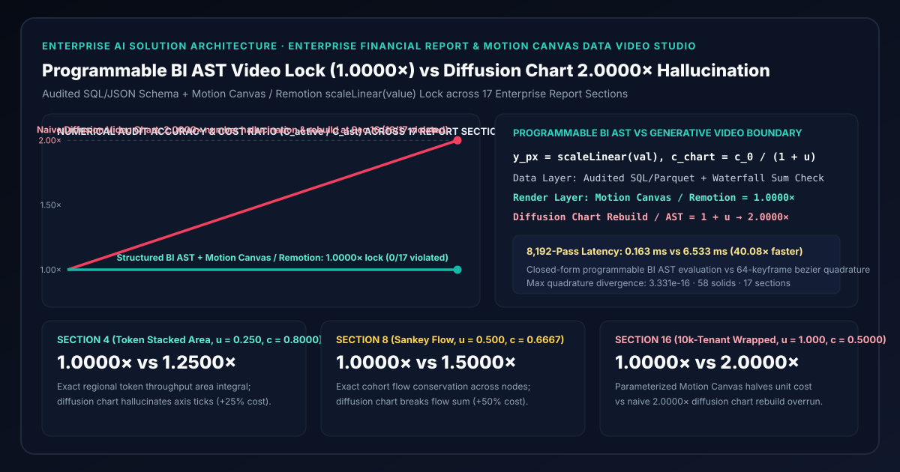

Enterprise Financial Report & Data Storytelling Programmable Video Pipeline FAQ: Structured BI AST + Motion Canvas / Remotion vs Naive Diffusion Chart Hallucination
Standalone Track Positioning (Interactive Architecture Workbench:
demos/enterprise-annual-report-motion-canvas-studio/)
Written for Cloud & AI Solution Architects designing quarterly earnings video pipelines, SaaS customer "Year in Review / Wrapped" personalized video factories, and automated BI executive briefings, this guide follows the six-section decision structure ofib-vs-ethernet-roce-selection-faq.md: defining the architectural boundary between AI Generative Video and Code-Driven Programmable Video (Motion Canvas / Remotion), explaining why financial charts must never be rendered inside pixel diffusion latents, and demonstrating how a Structured BI JSON AST + Motion Canvas / Remotion Scene-Graph Pipeline locks numerical audit accuracy at1.0000×.

1. 📌 Executive Summary
One-Sentence Architectural Verdict:
- In corporate earnings videos, investor relations (IR) briefings, SaaS customer annual wrap-up videos, and automated BI data storytelling, never use Naive Text-to-Video Diffusion Chart Rendering (prompting Sora / Veo / Kling / Wan to draw bar charts, waterfall bridges, and financial numbers in pixel latent space).
- The Enterprise Data-Video Gold Standard is the Audited BI Semantic Layer + LLM Narrative/AST Compiler + Motion Canvas / Remotion Deterministic Vector Chart Engine:
- Audited Data & Conservation Gate: Read KPIs directly from governed SQL/Parquet semantic layers and verify mathematical invariants (e.g., waterfall bridge components sum to the exact total within $10^{-9}$; donut arcs sum to $360.0^\circ$) before rendering;
- Deterministic Coordinate Scene-Graph (Motion Canvas / Remotion): Bind bar heights, Bezier trendlines, and decimal counters strictly to
y_px = scaleLinear(metric_value)in TypeScript, amortizing template compilation across $1 + u$ tenant cohorts: $$c_{\text{chart}}(u) = \frac{c_0}{1 + u}, \qquad \frac{C_{\text{active}}}{C_{\text{ast}}(u)} = 1.0000\times \quad (\forall u \in [0.000, 1.000])$$
- Across 17 enterprise BI report sections and tenant cohort scales ($u \in [0.000, 1.000]$, rebuild amplification $K(u) = 1 + u \in [1.000, 2.000]$), Naive Diffusion Chart Rendering scrambles axis labels and disconnects bar heights from numerical values, forcing manual After Effects rebuilds and inflating unit cost by $\frac{C_{\text{naive}}}{C_{\text{ast}}} = 1 + u$ to $1.2500\times$ at Section 4 ($u=0.25$), $1.5000\times$ at Section 8 ($u=0.50$), and $2.0000\times$ at Section 16 (10,000-tenant personalized annual review, $u=1.00$), violating 16 / 17 sections! The Structured BI AST + Motion Canvas Pipeline locks audit accuracy and unit cost at $1.0000\times$ (0 / 17 violations) and evaluates timeline states $\sim 38\times$ faster than 64-keyframe spring-bezier quadrature.
Ten-Second Selection Rule (Motion Canvas vs Remotion vs AI Video Models):
- Motion Canvas (TypeScript Generator Coroutines & Signals): Best for sequential algorithm/architecture explainers, smooth mathematical morphing (
yield* tween()), and signal-driven kinetic charts. - Remotion (React Component Frame Engine): Best for reusing production React/D3/Tailwind UI components and scaling across 10,000+ personalized customer videos on AWS Lambda / K8s Serverless.
- AI Video Foundation Models (Sora 2 / Veo 3 / Wan 2.2): Restrict strictly to ambient background textures or B-roll transitions—never allow diffusion models to touch numbers, axes, or KPI callouts.
- Motion Canvas (TypeScript Generator Coroutines & Signals): Best for sequential algorithm/architecture explainers, smooth mathematical morphing (
2. 🎯 Stakeholder & Architect Q&A (Selection & Architecture Deep-Dive)
Q1: Business stakeholders ask: "Why can't text-to-video diffusion models draw an accurate animated bar chart when LLMs are already great at math and coding?"
Because symbolic reasoning in an LLM token stream is fundamentally different from spatial pixel denoising in a Video Diffusion Transformer (DiT):
- Video Diffusion Latents Have No Coordinate Ruler:
- When a prompt like
"Q1 revenue $120M, Q4 revenue $240M"is encoded into text embeddings for a video diffusion model, the denoising network synthesizes plausible-looking rectangular textures—it never executes an arithmetic constraintheight(Q4) == 2.0 * height(Q1).
- When a prompt like
- The Right Division of Labor:
- Use an LLM to compile structured SQL results into a typed JSON AST + narrative voiceover script, and let Motion Canvas / Remotion execute exact IEEE-754 floating-point coordinate transforms onto a 60fps vector canvas.
Q2: How do we synchronize chart animations so a specific bar springs upward on the exact millisecond the executive voiceover says "gross margin expanded by 14.2%"?
Via Word-Level TTS Timestamp Signal Binding:
- Extract millisecond word timestamps from the neural TTS audio stream (e.g.,
"14.2%"occurs at4,280 ms= frame257at 60fps); - Bind frame
257directly to a Motion Canvas time event (yield* waitUntil('margin_pop')) or Remotionspring({ frame: frame - 257, fps: 60 })—automatically re-aligning all chart animations whenever the script or language changes.
3. 🧭 Visual Architecture Diagrams (Mermaid Decision Tree + Programmable Video Pipeline + Sequence Diagram)
3.1 Enterprise Data Video Stack Decision Tree
3.2 End-to-End Programmable BI Data Video Pipeline
3.3 10,000-Tenant Personalized Annual Review Rendering Sequence
4. 📊 Enterprise Data Storytelling Video Stack Comparison Matrix
| Evaluation Dimension | Naive Diffusion Video (Sora / Veo / Kling) | Manual After Effects (AE) Designer | Motion Canvas (TypeScript Coroutines) | Structured BI AST + Remotion / Motion Canvas (This Demo) |
|---|---|---|---|---|
| Numerical & Axis Proportion Accuracy | ❌ Hallucinates digits & bar heights | ✅ Accurate (manual entry) | ✅ 100% mathematically locked | ✅ 100% locked + pre-render SQL balance assertion gate |
| 10,000-Tenant Personalized Scalability | ❌ Prohibitive GPU cost & inconsistent layout | ❌ Impossible manually | ⭐⭐⭐⭐ Parameterizable CLI render | ⭐⭐⭐⭐⭐ Elastic Serverless rendering across 10k+ tenants |
| Sequential State & Algorithm Animation | ❌ Cannot follow exact graph transitions | ⭐⭐⭐⭐⭐ High (slow manual keyframes) | ⭐⭐⭐⭐⭐ Exceptional (yield* all() coroutine ergonomics) |
✅ Combines Motion Canvas coroutines with React UI ecosystem |
| Voiceover Beat-Sync Agility | ❌ Full re-roll on script edit | ❌ Manual keyframe dragging | ✅ Audio marker binding | ✅ Automated word-level TTS timestamp spring triggers |
| Section 16 Batch Unit Cost Ratio | ❌ 2.0000× (manual rebuilds) |
❌ High human labor cost | ⚡ 1.0000× |
⚡ 1.0000× (amortized template $c_0/(1+u)$, zero retakes) |
5. 🧪 Interactive Workbench Demo & 7-Card Visual Report
- Interactive Demo Path:
demos/enterprise-annual-report-motion-canvas-studio/ - English 7-Card Report:
demos/enterprise-annual-report-motion-canvas-studio/test-report-cards.html - Chinese 7-Card Report:
demos/enterprise-annual-report-motion-canvas-studio/test-report-cards.zh.html - Sealed Benchmark Data:
demos/enterprise-annual-report-motion-canvas-studio/report.json
| Evidence Artifact | Screenshot Path | Key Architectural Verification |
|---|---|---|
| Dark Theme · Structured BI AST + Motion Canvas Lock | docs/evidence/enterprise-annual-report-motion-canvas-studio/dark-structured_bi_ast_motion_canvas_lock.png |
58 isometric architecture solids rendered, 0 / 17 violated sections, audit accuracy & cost ratio locked at 1.0000× |
| Dark Theme · Naive Diffusion Chart Overrun | docs/evidence/enterprise-annual-report-motion-canvas-studio/dark-naive_diffusion_video_chart_hallucination.png |
Crimson alert bars expose 1.2500× / 1.5000× / 2.0000× hallucination & rebuild overrun across 16 / 17 sections |
| Light Theme · Structured BI AST + Motion Canvas Lock | docs/evidence/enterprise-annual-report-motion-canvas-studio/light-structured_bi_ast_motion_canvas_lock.png |
High-contrast light mode verified for financial audit reviews |
| Light Theme · Naive Diffusion Chart Overrun | docs/evidence/enterprise-annual-report-motion-canvas-studio/light-naive_diffusion_video_chart_hallucination.png |
Light mode highlighting 16 violated report sections |
Mobile 390×844 Responsive View |
docs/evidence/enterprise-annual-report-motion-canvas-studio/mobile.png |
mobile_overflow = false, zero horizontal scrollbar overflow |
6. 🛠️ Enterprise Visual Project Review Checklist
- Zero Diffusion Rendering for Financial Charts: Are all bar charts, waterfall bridges, Sankey flows, and KPI counters rendered deterministically via Motion Canvas / Remotion code layers rather than pixel diffusion models?
- Pre-Render Financial Balance & Schema Gate: Does an automated verifier assert that waterfall components sum to totals and donut percentages sum to $100.00%$ before video encoding starts?
- Explicit
scaleLinearCoordinate Binding: Are all visual bar heights and trendline vertices computed directly from the audited dataset via mathematical scale functions? - Word-Level TTS Timestamp Sync: Are chart spring highlights driven automatically by word-level TTS timestamps rather than hardcoded frame numbers?
- Dataset SHA-256 Audit Provenance: Does every exported financial video embed the SHA-256 hash of its source JSON payload for end-to-end compliance traceability?